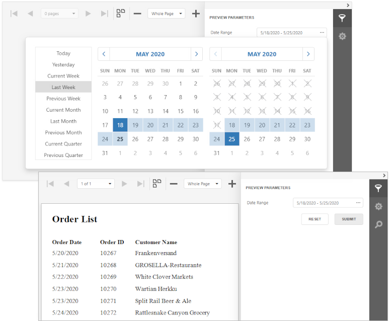
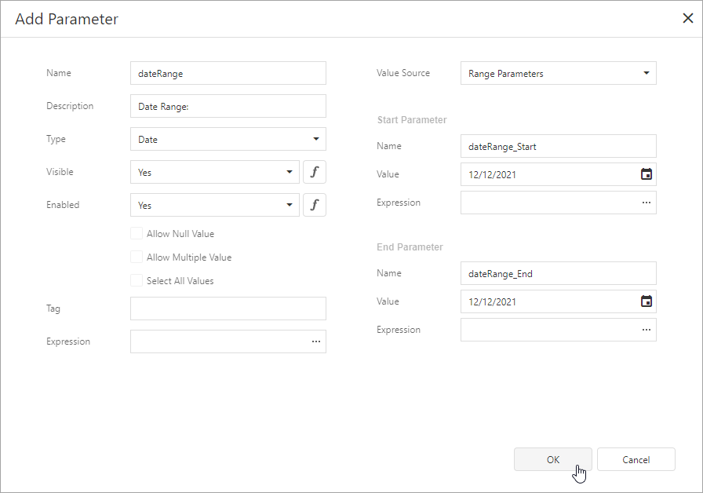
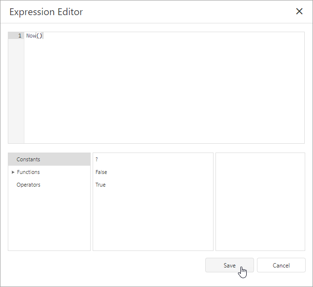
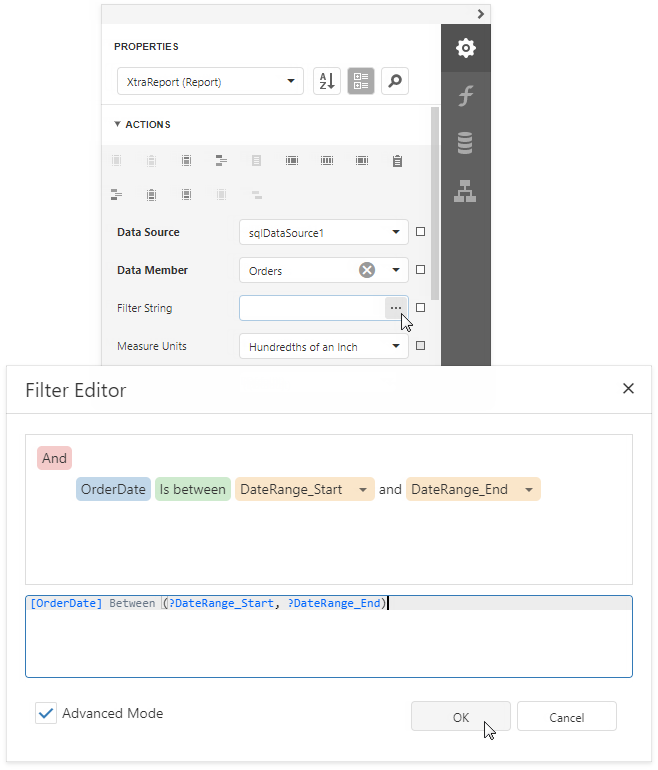
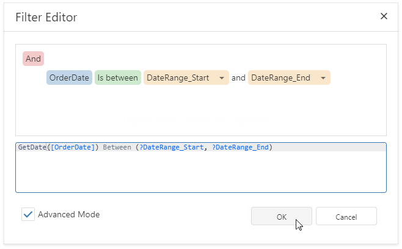

Date Range Report Parameters
This topic describes how to create a date range parameter and filter a report's data by the specified dates.

Create a Date Range Parameter in the Report Designer
Follow the steps below to add a date range parameter to a report in the Report Designer:
Create a report parameter with the Date & Time type and set its Value Source option to Range Parameters. The Start Parameter and End Parameter sections appear, and you can configure options in these sections to create a date range.

Set the name and initial value for the Start Parameter and End Parameter. To specify an expression instead of a static value, click the Value option's ellipsis button and use the Expression Editor dialog.

After you create a date range parameter, you can reference the names of the Start Parameter and End Parameter in the report's filter string to filter the report's data by the created date range. Select the report, click the FilterString's ellipsis button in the Properties window, and construct a filter condition in the invoked FilterString Editor.

When you switch to the report's Print Preview tab, the Parameters panel displays the date range parameter. After you submit a start and end date, the report document shows filtered data.
The start and end parameter values store the selected day's midnight time. For instance, if you choose 10/15/2019, the DateTime value is 10/15/2019 12:00:00 AM. If your date fields include non-midnight times, records for the end date 10/15/2019 are excluded from the report. To include data for the 10/15/2019 date, use the GetDate() function in the FilterString Editor.
